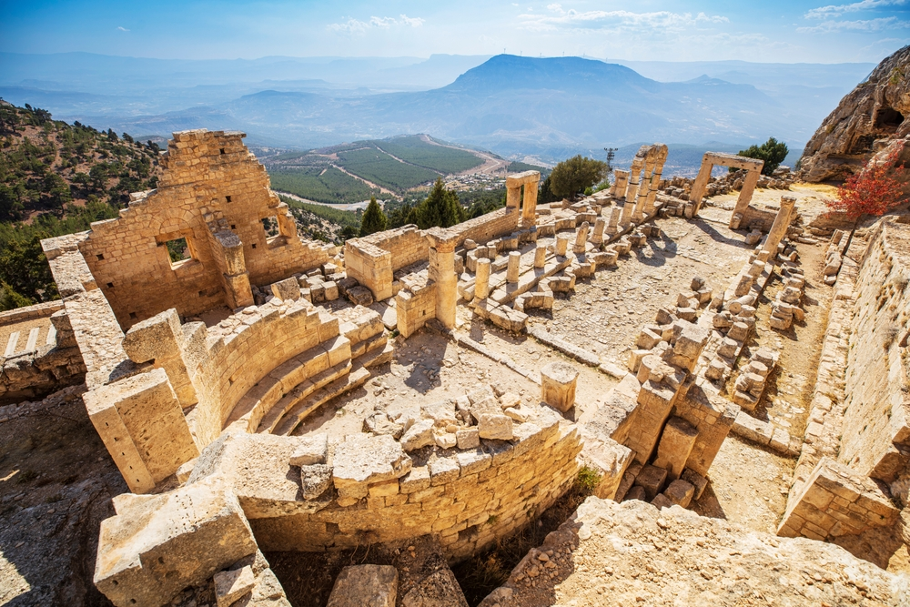
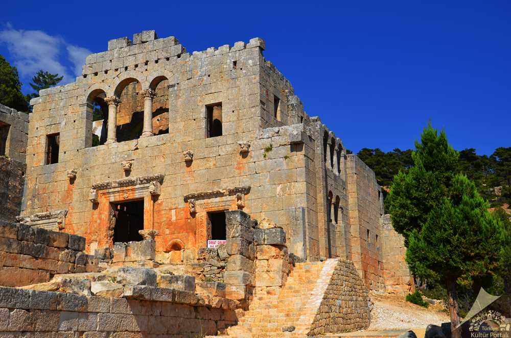
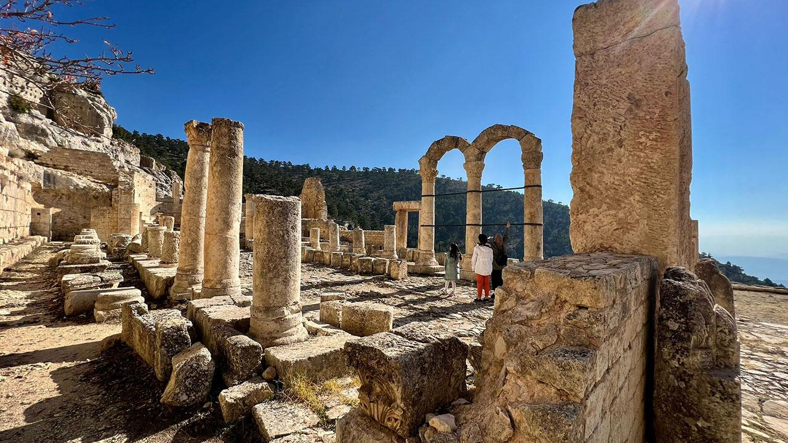

Mersin’in Mut ilçesinde yer alan manastırı, Torosların yamacında bulunuyor. Göksu’ya karşı konumlanmış lokasyonu ile M.S. 4 ve 6. yüzyıllar arasında Hristiyanlar tarafından yoğun olarak kullanıldığı tahmin ediliyor. Evliya Çelebi’nin seyahatnamesinde bahsetmesi ile dikkat çeken ve ustasının elinden yeni çıkmış gibi duruyor ifadesi ile tanınan Alahan Manastırı, bu döneme denk gelebilmiş ve en başarılı şekilde muhafaza edilmiş dini yapılardan biri. Karaman ilinden de ulaşımın mümkün olduğu manastırın günümüzdeki haline gelene dek çeşitli restorasyon çalışmalarına uğradığı biliniyor. Manastır içerisinde iki farklı kilise bulunuyor. Kiliselerden bir tanesi tahrif edilmiş olsa da diğer kilise ziyaretçileri için aktif olarak hizmet vermeye devam ediyor. 2000 yılından beri Dünya Kültür Mirası Adayları listesinde yer alan Alahan Manastırı Türkiye listesinde ise 12. sırada bulunuyor.
  